J-PARK นิฮอน มูระ ศรีราชา
เกาะลอย เป็นเกาะเล็กๆ ขนาดเพียง 3 ไร่ ตั้งอยู่กลางทะเล ห่างจากชายฝั่งของ อำเภอศรีราชา จังหวัดชลบุรี เพียง 500 เมตร โดยมีสะพานคอนกรีตชื่อ เจ้าพระยาสุรศักดิ์มนตรี ทอดยาวเชื่อมระหว่างเกาะกับชายฝั่ง เป็นจุดชมวิวพระอาทิตย์ตกที่สวยมากที่สุดแห่งหนึ่งในจังหวัด อีกทั้งยังเป็นสถานที่พักผ่อนหย่อนใจของชาวเมืองศรีราชา รวมถึงนักท่องเที่ยวมากมาย เพราะนอกจากจะเที่ยวภายใน เกาะลอย ได้แล้ว ยังมีท่าเรือที่สามารถลงเรือไปเที่ยว เกาะสีชัง ต่อได้อีกด้วย
 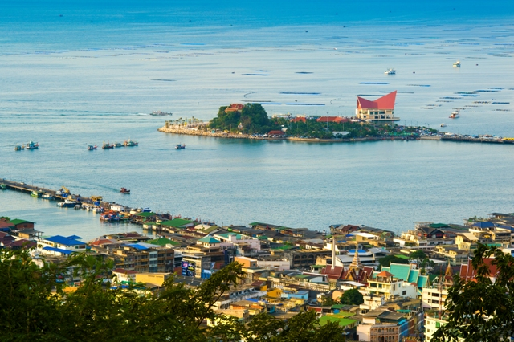
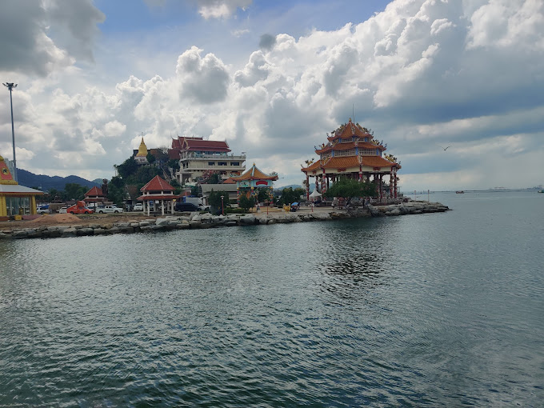
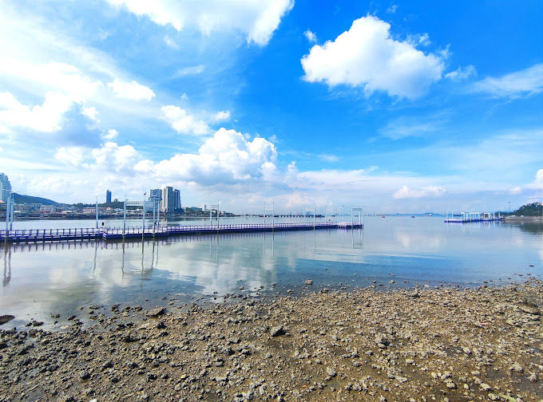
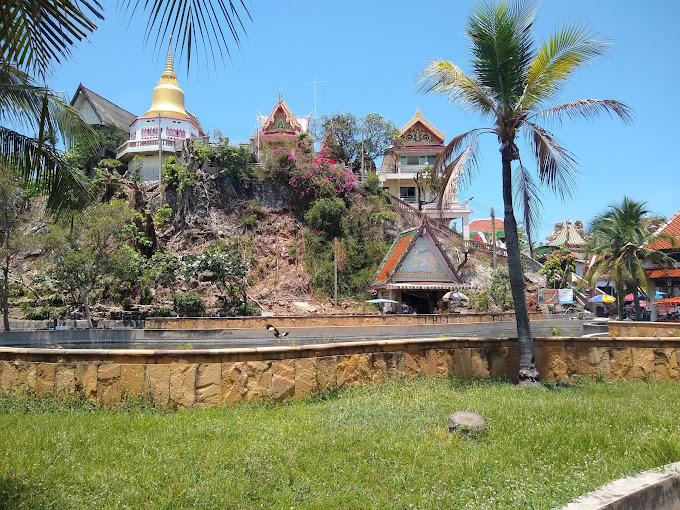
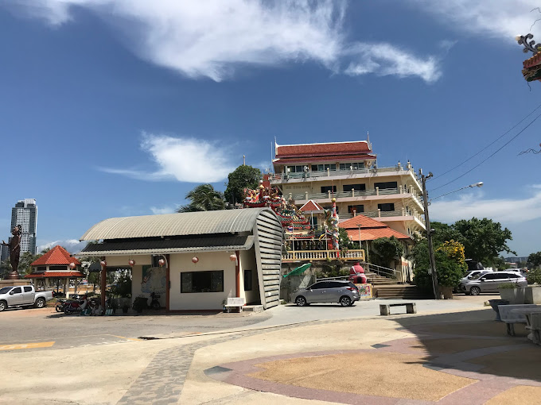
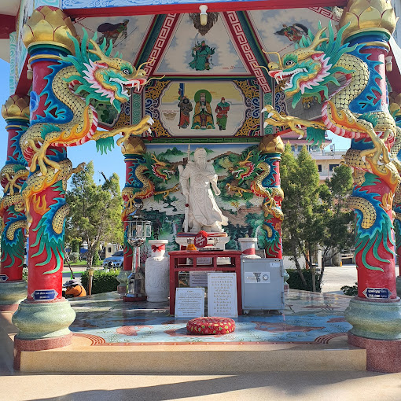
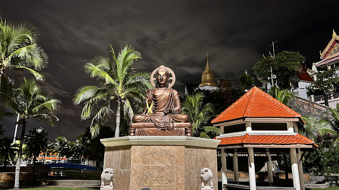
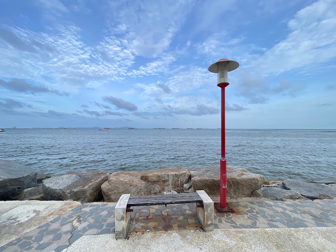
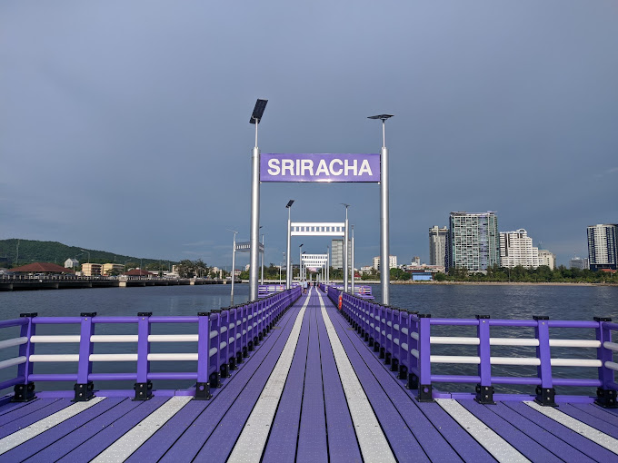
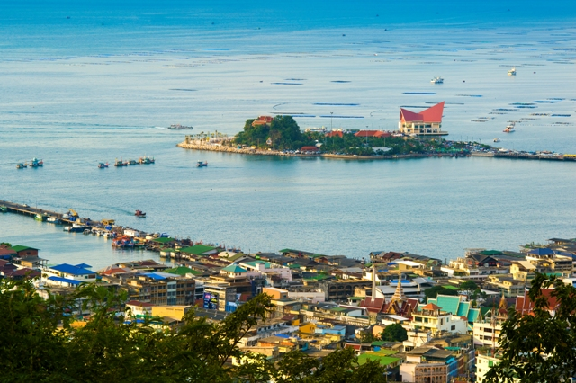
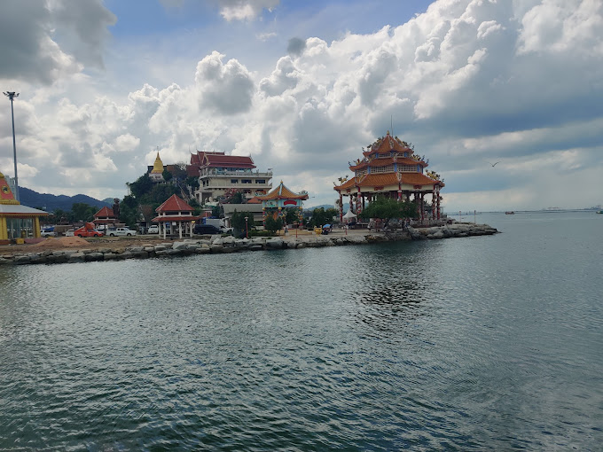
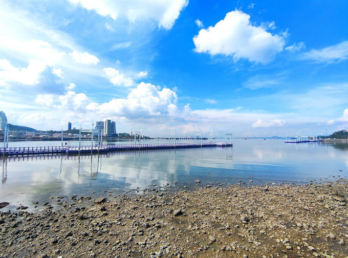
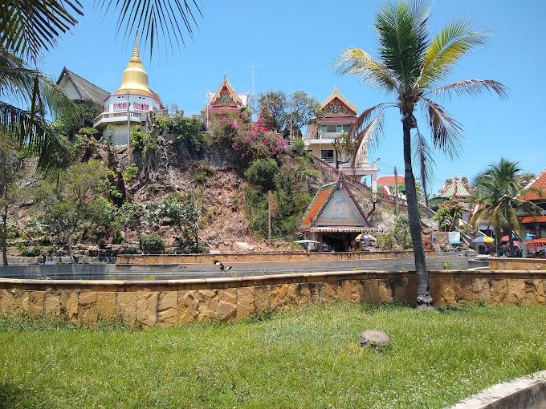
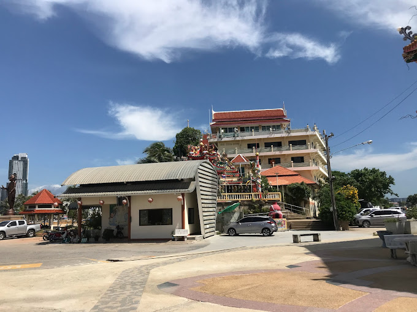
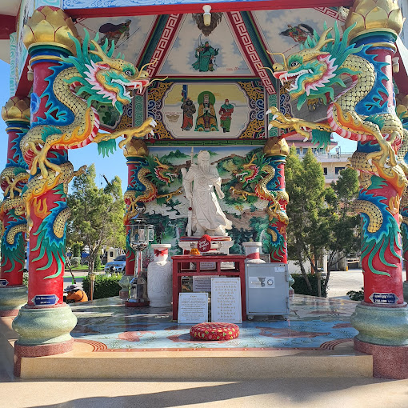
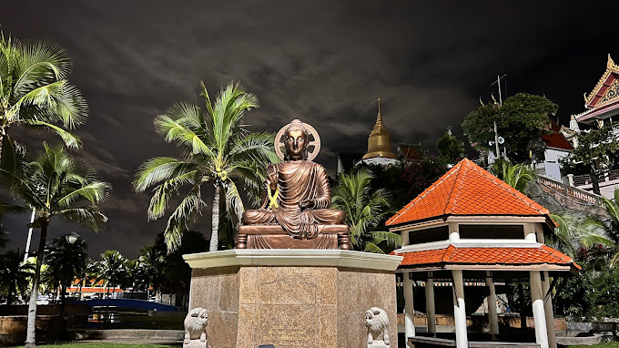
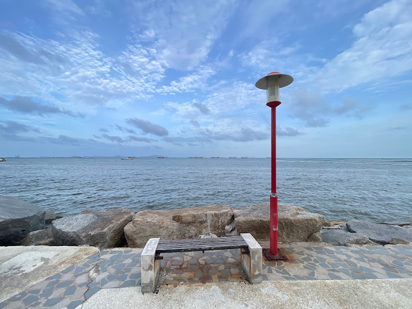
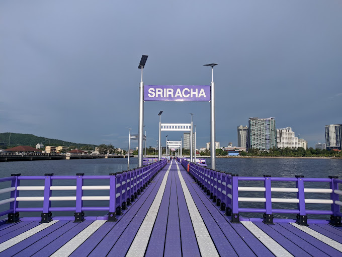